|
|
☰ 目录
20180922 开车小知识开车前调整事项1- 上车后，需要调整一下事项： 按照次序来，先座位， 再耳朵，后天窗； 2- 座位， 自己调的合适踩刹车和油门即可（左刹右油，不能搞错了）； 3- 然后根据现在坐姿，调整左右两个耳朵，那么调耳朵， 先左边： 镜子的正中间与后远方的横向水平线齐平； 车身占镜子横向比例的1/4 较好； 再右边： 镜子的镜子的正中间与后远方的横向水平线齐平； 车身占镜子横向比例的1/4 ~ 1/2 较好 【方便看清后方来车】； 4- 调天窗 天窗一般不用调， 能看到正后方的车即可，一般有时需要看看后方来车； 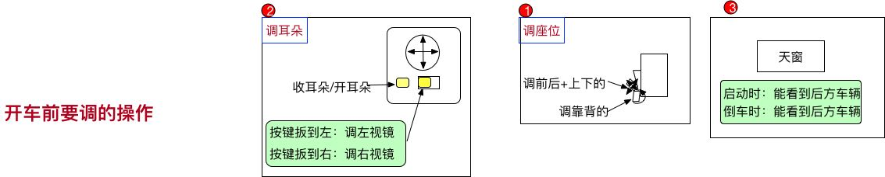 启动和停止停止1- 先说停车 首先， 肯定要先踩住刹车； 然后，把档位挂到底（挂挡看表盘即可，切记不要看档位）， 挂P挡； 拉手刹， 刹车； 最后按熄火； 【一定要记住，先档位， 后手刹， 特别重要。 手刹是保护作用，所以不管是停还是启动，都是最后一步】 2- 停车的地方要注意：
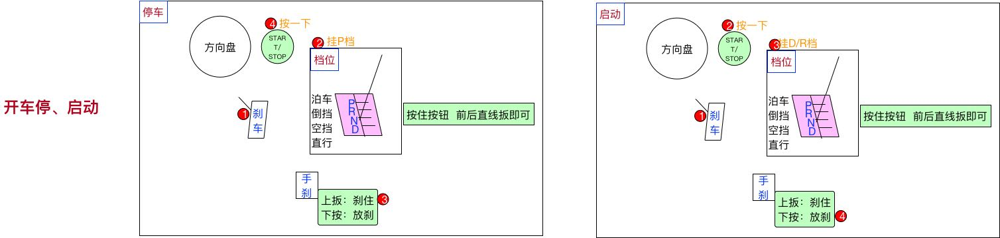 启动1- 按刹车，不多说了； 2- 启动； 3- 挂挡D或者R， 可能要倒一下呢； 4- 按手刹， 然后送刹车就能跑了。 无论是停止还是启动，都是 刹档轧（手札） 红绿灯停1- 有时候等红绿灯的左转向，要等很长时间，就需要空挡刹车； 2- 这个比较简单： 先刹车； 再挂空挡； 然后拉手札； 这样停住了，脚就可以松了。 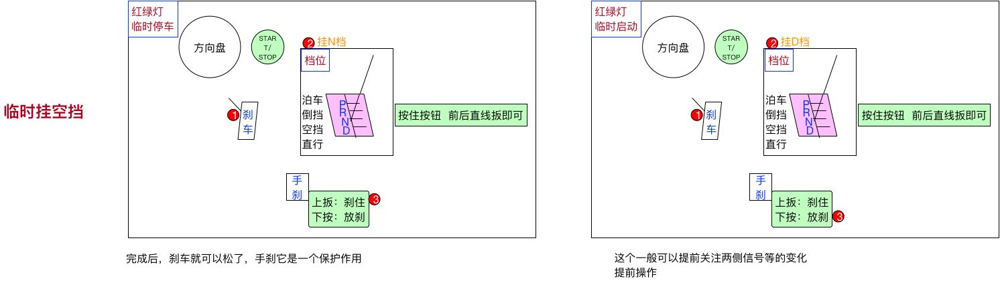 红绿灯启动1- 及时看到绿灯后， 踩刹车， 要快速挂D挡，要不然后面要滴滴了。 最后往下按手刹， 可以跑了。 红绿灯路口注意事项1- 在红绿灯路口，特别注意，一不小心就被拍到了； 2- 首先， 需要提前看准车道，有的最左侧，只能左转，如果不小心转到了这里，就只能将错就错了。否则，红绿灯路口的线都是白色实线， 强行转到扣分； 3- 在进入车道时，要看准，左右没有压实线，否则，拍到扣分；【参考后面，车辆在路口中间】 4- 红绿灯路口可以掉头的两种情形： 首先，对面没有禁止掉头的标志
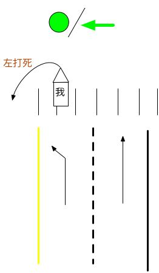 5- 红绿灯路口，岔路口，一定要礼让行人。 左右两边，及时摆头； 6- 脚不离刹车和油门，不要踩错了。 7- 变道要迅速，提前打灯，然后摆头看， 如果可以，再打方向盘。 一定是先灯后看，再操作。 8- 红绿灯路口， 带拐弯的， 尽量不要踩油门， 脚放刹车上。 9- 过红绿灯路口， 一定要多摆头， 脚在刹车上。 10- 对面是绿灯，可以进入预左转车道： 11- 预左转， 待到对面是绿灯， 可以提前开进预转车道，提高转弯效率 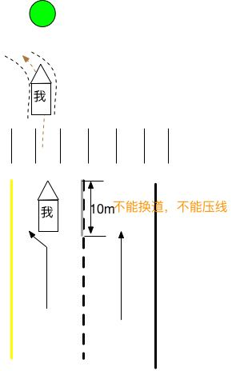 12- 一般自己这边过红绿灯是实线， 对面不是， 所以可以变道。 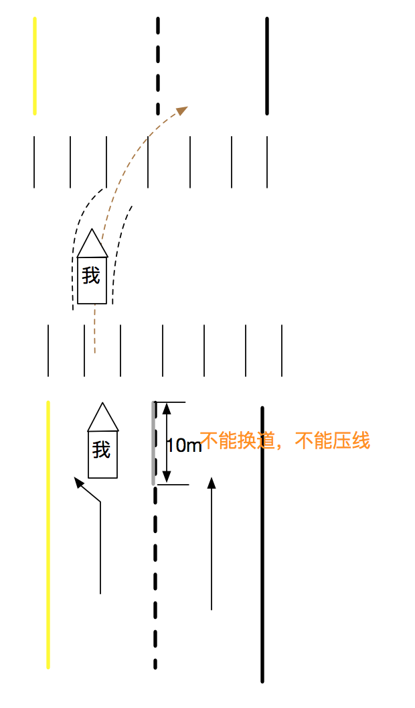 x 掉头1- 掉头算是比较复杂的， 提前打左转向灯， 在移动的过程中， 快速往某个方向打死。 要预估能不能转过去； 2- 是移动的时候， 才能转动方向盘； 3- 快速回方向盘， 进入对面车道， 尽量不压线； 4-掉头， 车头要出斑马线。 转弯1- 左转转大弯， 不要打太快了。 右转转小弯； 【右转还要特别看右侧行人，因为这时候右转打方向盘的幅度比较大】 2- 不压线1- 要想在红绿灯路口不压线， 必须找准哪个点对应调整车身的位置。 2- 找到手握方向盘， 左手正前方和车子的交点， 那里有个鼓轮的痕迹。 那么这点到左侧的距离为d的话， 路边双实线的距离为D时， d 的可调范围保证在【0~D】 之间， 能保证车在路的正中间。 0： 好像是左轮刚好压线。 3- 能找准车身的位置了， 其它就不慌了。 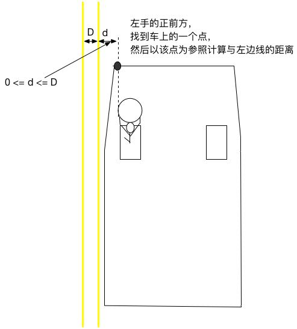 4- 车辆的宽度: 1.8m x 4.5m 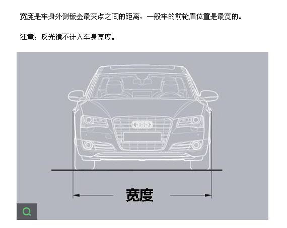 高速公路收费站的宽度：2.5m; 5- 各种距离参数 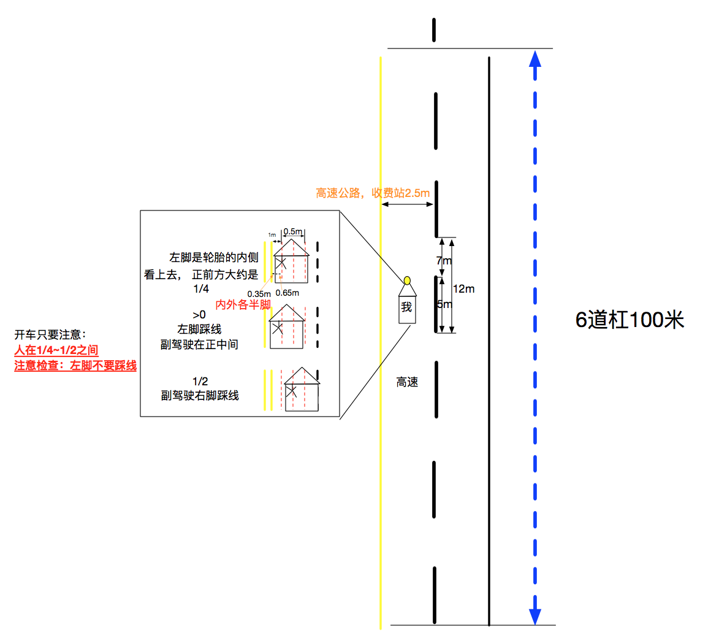 车身的各种距离参数：左脚外有40cm。 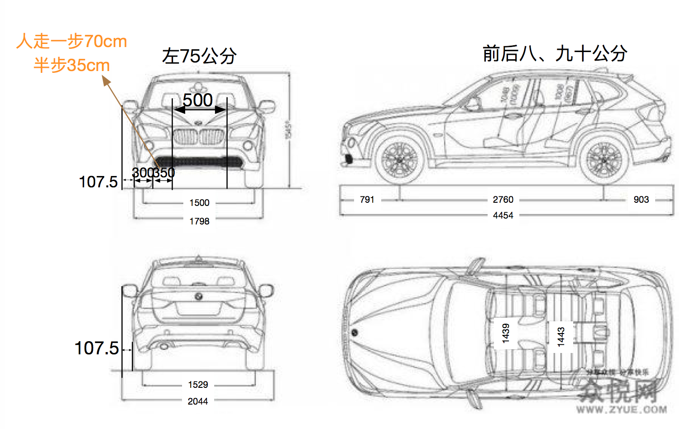 正门1- 学校， 酒店这种， 要找到哪边是入口，哪边是出口呢， 一般面对你的， 靠右走即可。 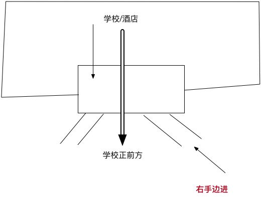 导航转向-换道1- 导航篇: 市内红绿灯100米，200米转好比较好。100内就要转向换道了 50米大概要到路口了 因为包括20米的路宽。 【红绿灯200米内基本只有一个， 200~400米， 一般是有两个十字路口】 高架或者高速 200米要换道， 准备变道 服务区导航2公里报，1公里有路上路标指示牌， 100米内进入岔路口， 进入服务区。 2- 高架或高速换道， 60码以内 都得快速变道【先打灯再变道】， 因为整体速度都很快 3- 看到别人近距离变道， 要减速 如下图， 看到右侧车辆打转向灯/或突然加速， 说明要加速转过来，需要踩点刹车， 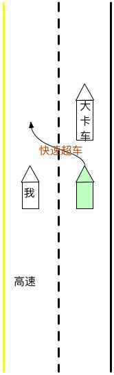 4- 当右侧有卡车打转向，想变道的时候，可以打双闪，禁止别人换道： 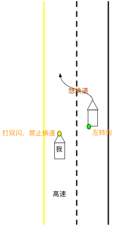 5- 高速最低限速：80码 匝道的入口、出口都在右侧边 |